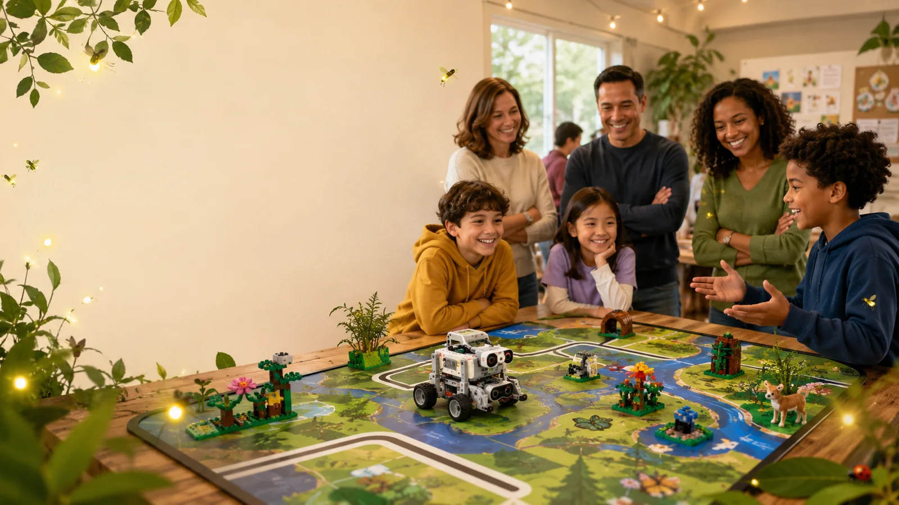
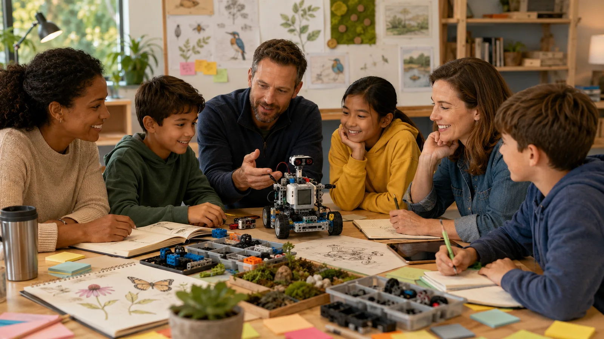
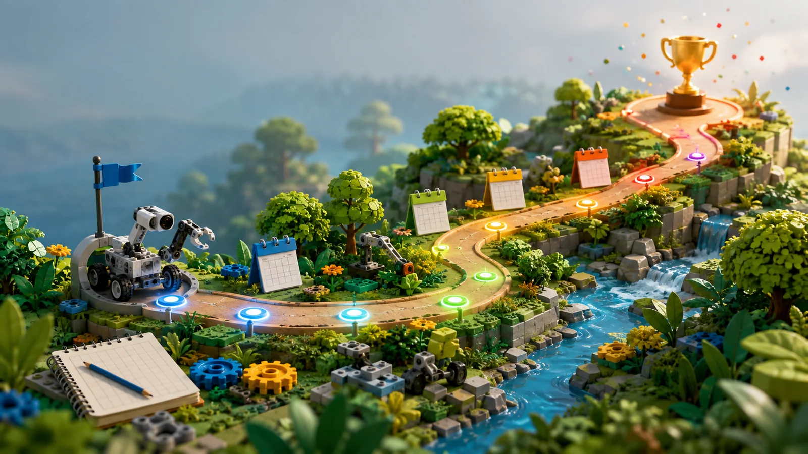

Autonomous robot
Design reliable attachments, navigation programs, and mission runs using SPIKE Prime.

Five students from Folsom learning robotics, research, teamwork, and communication through the 2026–27 BIOGLOW biodiversity season.
Our season combines autonomous robotics with a real-world Innovation Project. The children will make the decisions, build the prototypes, test their ideas, and explain what they learned.

Design reliable attachments, navigation programs, and mission runs using SPIKE Prime.
Research a real problem, interview experts, create a testable solution, and improve it from feedback.
Share responsibilities, document decisions, resolve disagreements, and learn from failures.
Every student should be able to explain the robot, project, evidence, and their contribution.

We will measure success by what the children can repeatedly demonstrate and clearly explain—not by a single lucky robot run.
Update percentages in assets/js/site-data.js.
Read the official game materials, build the mission models accurately, explore local biodiversity problems, and agree on how the five students will rotate responsibilities.